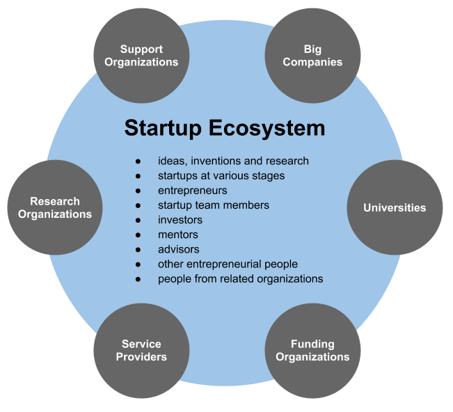

What is Startup and Ecosystem?
A startup or start-up is a company or project undertaken by an entrepreneur to seek, develop, and validate a scalable business model. While entrepreneurship refers to all new businesses, including self-employment and businesses that never intend to become registered, startups refer to new businesses that intend to grow large beyond the solo founder. At the beginning, startups face high uncertainty and have high rates of failure, but a minority of them do go on to be successful and influential.
The size and maturity of the startup ecosystem is where a startup is launched and where it grows to have an effect on the volume and success of the startups. The startup ecosystem consists of the individuals; institutions and organizations (top research universities and institutes, business schools and entrepreneurship programs and centres operated by universities and colleges, government entrepreneurship programs and services, Chambers of commerce) business incubators and business accelerators and top-performing entrepreneurial firms and startups. A region with all of these elements is considered to be a "strong" startup ecosystem.

Principle of Lean Startup
Lean startup is a clear set of principles to create and design startups under limited resources and tremendous uncertainty to build their ventures more flexibly and at a lower cost. It is based on the idea that entrepreneurs can make their implicit assumptions about how their venture works explicit and empirically testing it. Hence, lean startup is a set of principles for entrepreneurial learning and business model design. More precisely, it is a set of design principles aimed for iteratively experiential learning under uncertainty in an engaged empirical manner. Typically, lean startup focuses on a few lean principles:
* find a problem worth solving, then define a solution
* engage early adopters for market validation
* continually test with smaller, faster iterations
* build a function, measure customer response, and verify/refute the idea
* evidence-based decisions on when to "pivot" by changing your plan's course
* maximize the efforts for speed, learning, and focus